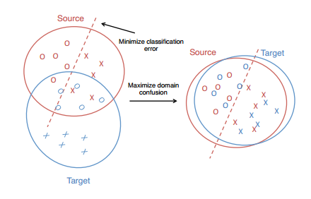
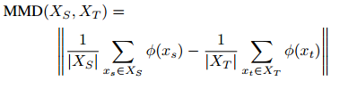
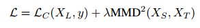
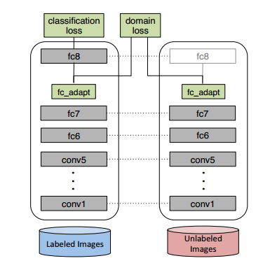

在图像识别领域，传统的有监督方法的一个众所周知的问题就是数据集偏差。许多理论和实验都表明，在测试集上的错误率上升，来源于测试集与训练集数据的分布差异。同时，由于源领域和目标领域的数据分布不同，在源领域训练好的分类器不能直接在目标领域使用。
对领域不变性的优化，可以被认为是：找到一种表现形式，使得领域之间表现得尽可能的相似，从而完成分类的学习任务。
Deep Domain Confusion正是基于这一思想，同时优化分类损失和领域之间的差异损失，从而达到领域自适应的目的。作者提出了一种新的CNN架构，通过引入了一层自适应层，来最小化领域之间的差异。作者使用MMD方法来衡量源领域和目标领域之间的差异。

为了最小化两个领域之间的距离，DDC使用Maximum Mean Discrepancy(MMD)方法对距离进行衡量。定义了一个表现形式(representation)，$\phi (\cdot)$，作用域源域的样本以及目标域的用别样本之上。两个领域之间的距离如下计算：

在考虑到距离损失之后，网络的损失修改成如下形式：

MMD基本概念以及计算公式
作者通过加入一个自适应层(Adaptation Layer)来完成源领域向目标领域的迁移，实际上是一个维度较低 的全连接层。作者的直觉是，更低维度可以用来规范化源分类器的训练并且避免过拟合。

主要有两个问题需要确定：在哪一层放入自适应层，以及自适应层的维度应该设为多少。
第一个问题，作者通过计算source和target在不同层的表达之间的MMD数值，选择了数值最小的位置。
第二个问题，作者通过网格搜索(Grid Search)方法，确定了能够最小化MMD的维度。
最后，所有数据用于计算domain loss，有label的数据用于计算classification Loss。source CNN和target CNN 网络参数共享。